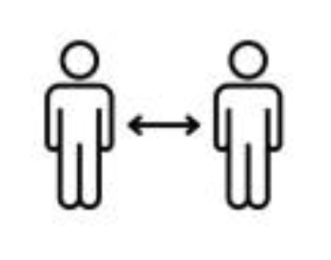
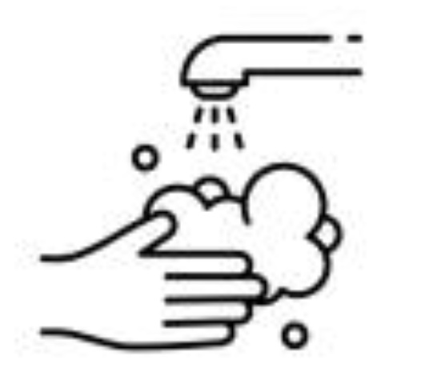
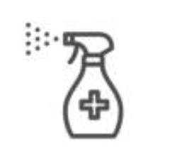

Prevention and Vaccines
Prevention
|
|
Wear a Mask
Everyone 2 years or older should wear masks in public. Ensure that the mask fits snugly against the sides of your face.
|
|

|
Stay 6 feet away from others
Put 6 feet of distance between yourself and people who don’t live in your household.
|

|
Get vaccinated
You should get a covid-19 vaccine when it is available to you. Getting vaccinated reduces your risks of getting COVID-19 and prevents you from getting seriously ill if you do get it.
|
|
|
Avoid crowds and poorly ventilated spaces
Being in crowed places increases your chances of getting COVID-19.
|
|

|
Wash your hands often
Wash your hands often with soap and water. If soap and water are not readily available, use a hand sanitizer. Avoid touching your eyes, nose, and mouth with unwashed hands.
|
|
|
Always cover coughs and sneezes
If you are wearing a mask, replace the mask as soon as possible.
If you are not wearing a mask, cover your mouth and nose with a tissue or use the inside of your elbow.
|
|

|
Clean and disinfect
Surfaces that are touched frequently should be cleaned and disinfected daily. For example, doorknobs, handles, light switches, keyboards, tablets, desks, countertops, faucet, toilets, etc.
|
|
|
Monitor your health daily
Be alert for symptoms. Watch for fever, cough, shortness or breath or other symptoms of COVID-19.
|
Vaccines
There are 4 types of vaccines:
- Whole Virus Vaccine
- RNA or mRNA Vaccine
- Non-Replicating Viral Vector
- Protein Subunit
1. Whole Virus Vaccine
Vaccines include: Sinopharm, Sinovac
Number of doses required: 2 doses, intramuscular
What to know: The whole virus vaccine uses a weakened or deactivated form of the pathogen that causes COVID-19 to trigger protective immunity to it. The two vaccines mentioned above – Sinopharm and Sinovac – both use inactivated pathogens, therefore they cannot infect cells and replicate, but can trigger an immune response.
2. RNA or mRNA Vaccine
Vaccines include: Pfizer-BioNTech, Moderna
Number of doses required: 2 doses, intramuscular
What to know: The COVID-19 RNA vaccine consists of mRNA molecules made in a lab that code for parts of the SARS-CoV-2 virus – specifically the virus’ spike protein. Once injected into the body, the mRNA instructs the cells to produce antigens – such as the spike protein mentioned – which are then detected by immune cells, triggering a response by the body’s lymphocytes. The killer T-cells destroy the infected cells, while the B-cells and helper T-cells support antibody production. Whoever is exposed to the COVID-19 coronavirus in the future would have an immune system that recognizes it, and in turn fight off the infection.
3. Non-Replicating Viral Vector
Vaccines include: Oxford-AstraZeneca, Sputnik V (Gamaleya Research Institute)
Number of doses required: 2 doses, intramuscular
What to know: This type of vaccine introduces a safe, modified version of the virus – known as “the vector” – to deliver genetic code for the antigen. In a COVID-19 vaccine, the “vector” is the spike proteins found on the surface of the coronavirus. Once the body’s cells are “infected”, the cells are instructed to produce a large amount of antigens, which in turn trigger an immune response.
4. Protein Subunit
Vaccines include: Novavax
Number of doses required: 2 doses, intramuscular
What to know: The protein subunit vaccine contains purified “pieces” of a pathogen rather than the whole pathogen to trigger an immune response. It is thought that by restricting the immune system to the whole pathogen, the risk of side effects is minimized.